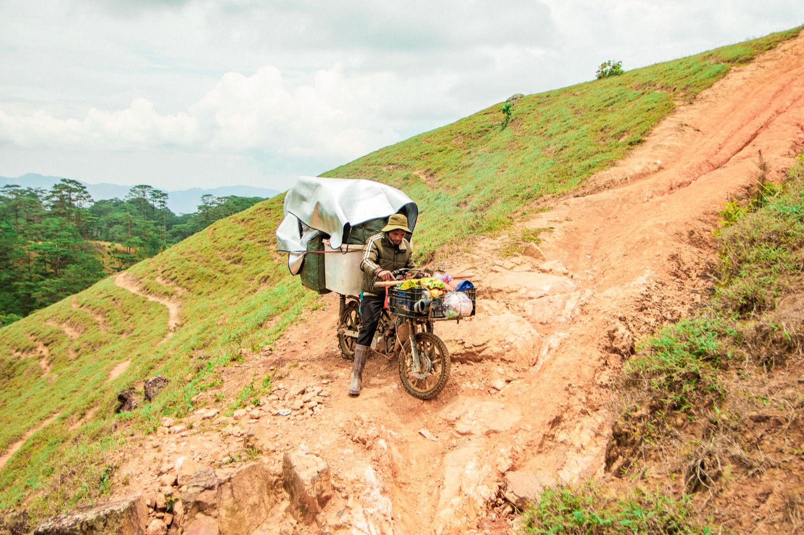

Сломался байк во Вьетнаме: что делать туристу
Если байк заглох, главная задача — не починить его посреди потока, а сначала оказаться в безопасном месте. В городах Вьетнама мотомастерские встречаются часто, и большинство бытовых неисправностей проще показать механику.
Шаг 1. Уйди с проезжей части
Не останавливайся резко. Включи поворотник или аварийный сигнал, оцени транспорт сзади и плавно переместись к краю. На скоростной дороге отойди от потока вместе с пассажиром. Ночью используй фонарь телефона, но не стой перед байком на полосе.
Шаг 2. Проверь очевидное
- есть ли топливо;
- включено ли зажигание и выключатель двигателя;
- поднята ли боковая подножка, если у модели есть блокировка;
- не разряжен ли аккумулятор;
- нет ли свежей лужи масла или бензина.
Не разбирай двигатель и не трогай горячий глушитель. При запахе топлива, дыме или заметной утечке не пытайся снова заводить байк.

Как найти мастерскую
Ищи на карте sửa xe máy — ремонт мотобайков — или спроси у ближайшего кафе. Покажи мастеру видео симптома и модель байка. До начала ремонта уточни причину, стоимость детали и работы. Если меняют дорогую деталь, попроси показать старую.
Как доставить неисправный байк
Если мастерская рядом и колёса свободно вращаются, байк можно аккуратно докатить. Для дальней перевозки попроси сервис прислать мастера или подходящий транспорт. Не соглашайся на опасную буксировку верёвкой другим байком.
Если байк арендованный
Сначала свяжись с прокатчиком и отправь геолокацию, фото и короткое видео. Не заказывай крупный ремонт без согласования: договор может определять, кто выбирает сервис и оплачивает работу.
Если байк ваш
Храни в телефоне контакты продавца или знакомого сервиса, фото техпаспорта и номера. После ремонта запиши, что заменили. Регулярная профилактика дешевле аварийного ремонта — основные интервалы разобраны в статье об уходе за байком.
Мини-набор в дороге
Заряженный телефон, пауэрбанк, немного наличных, дождевик и контакт сервиса полезнее большого набора инструментов без опыта. Для дальней поездки также проверь шины, тормоза, свет и уровень топлива.
Коротко
Сначала безопасность, затем простая проверка и связь с мастером. Не заводи байк при утечке или дыме и не соглашайся на рискованную буксировку.